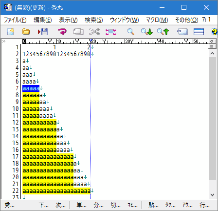
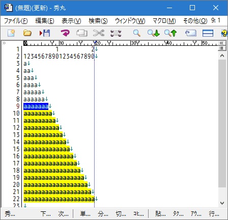
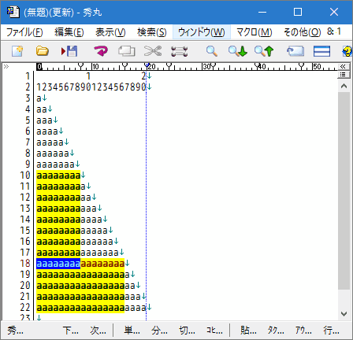

秀丸エディタだけでなく、高度で自由度の高い検索をするには必須の「正規表現」。 ここでは実用上重要な例をとりあげながら、わかりやすく解説します。 今日からあなたの「検索」が変わります。
正規表現に関する話題は、 次の「【０】いんとろだくしょん」に続く 以下の５章から構成されています。
【１】 基本編 〜表記のルールと意味〜
【２】 実践編 〜正規表現による置換の実際〜
【３】 まとめ
【４】 参考文献
【５】 (補足) 秀丸エディタ上での複数行にまたがる検索について
いきなりですがここでクイズです。
文書に検索を行って、ヒットしたものを全て抜き出す作業に grep機能 を使うのは前提として、 ここで問題なのはどういう検索を行えばよいか という事です。 単に “明日は” や “でした。” を検索すると、正しい文までヒットしてしまうのは言うまでもないでしょう。 とりあえずそれらで検索した後、 該当部分だけ抜き出せばいいというのも、
せっかく「こんぴゅーた」を使っているのに
何とも口惜しい…。 まぁ
「こんぴゅーた」なんてのは与えた命令しか実行しない無粋なモンだ
と言ってしまえばそれまでですが、逆に言えば、こんぴゅーたに「何を探したいか」を適切に教えてやれば、 ちゃんと仕事をしてくれるはずです。
この例の場合、探したいものは
という 文字の並び方のルール として表現できますが、このようにルールとして与えてやれば、
ルール通りに物事を運ぶことにかけては右に出るものはない
こんぴゅーたのことですから、きっとうまいこと(笑)やってくれるはず。
…前置きが長くなりましたが、こういう
文字の並びのルールを コンピュータが理解できるように表現したものが 『正規表現』
です。
ちょっと先走ってしまいますが、 言葉で表現した文字の並びのルールを正規表現を使って表現すると、
となります。 上の正規表現には、“明日は” や “でした。” などのような探したい文字そのもの の他、 “^” や “.+” や “$” という記号 が含まれています。 すぐ後の【１】基本編 で説明しますが、これらの記号は文字の並び方のルールを表現するための特別な意味を持っていて、 上の例でいうと「〜で始まり」「何か文があって」「〜で終わる」といったルールに対応しています。 このように、正規表現は文字の並びのルールを言葉ではなく
(普通の)文字 ＋ (文字の並びのルールを表現するための)記号
で表します。
なお、上の例のように正規表現を使って表した文字の並びのルール自体を正規表現、 または パターンと呼ぶことがあります。 用語の混乱を避けるために、以下の説明では「パターン」と呼ぶことにします。
途中で脱線してしまいましたが、探したいものをコンピュータにもわかるようにパターンとして表わすことができたら、 あとは検索文字列に上のパターンを書き込んで、
それいけー！！
というかけ声と共に検索を実行すれば、 望み通り変な文だけを検索することができます。
では、以下の章でこれらの記号の意味と使い方について説明していきます。
まず前章の例の真ん中辺りにあった「.+」ですが、これは言葉で表現した文字の並びのルールの 「何か文があって」という部分に対応しています。 この記号は「.(ピリオド)」と 「+ (プラス)」との組み合わせで、 それぞれ
. (ピリオド) … 任意の１文字
+ (プラス) … 直前の文字の１回以上の繰り返しという意味を持っています。
ピリオドは、 MS-DOS のワイルドカード(懐かしい(笑))では「?」と表現していたもので、 どんな１文字にもマッチ(*1)します。 例えば “あ.た”というパターンは、 “あんた” にも “あいた” にも “あした”にも、 果ては
“あ＃た” という 謎のダイイングメッセージ
にもマッチします(笑)。
プラス記号の方はちょっと注意が必要で、これ単独では意味を成しません。 必ず直前に文字 があって、その１回以上の繰り返しにマッチします。 例えば “痛て+”というパターンは “痛て” という軽い痛みから
“痛てててててて”
という悶絶するような痛み全てにマッチします。 正規表現を使わないと“痛て” と “痛てて” と “痛ててて” と…と全ての可能性をいちいち検索する必要がある所を、 このように
一発！
で指定できるわけです。
今説明したピリオドやプラス記号のような、 正規表現の中で特殊な意味を持つ記号のことをメタキャラクタと呼びます。 メタキャラクタはこれらの他にも下記の表にあるようにいっぱい(笑)あります。
| 量指定メタキャラクタ | 意 味 |
* |
直前の文字(※)の０個以上の繰り返しにマッチ |
+ |
直前の文字(※)の１個以上の繰り返しにマッチ |
? |
直前の文字(※)の０個(＝１個もない)または１個にマッチ |
{n} |
直前の文字(※)の n 個の繰り返しにマッチ |
{n,} |
直前の文字(※)の n 個以上の繰り返しにマッチ |
{n,m} |
直前の文字(※)の n からm 個の繰り返しにマッチ |
*? |
直前の文字(※)の０個以上の繰り返し(最短一致)にマッチ |
+? |
直前の文字(※)の１個以上の繰り返し(最短一致)にマッチ |
?? |
直前の文字(※)の０個(＝１個もない)または１個(最短一致)にマッチ |
{n}? |
直前の文字(※)の n 個の繰り返し(最短一致)にマッチ |
{n,}? |
直前の文字(※)の n 個以上の繰り返し(最短一致)にマッチ |
{n,m}? |
直前の文字(※)の n からm 個の繰り返し(最短一致)にマッチ |
| 位置指定メタキャラクタ | 意 味 |
^ |
(パターンの先頭にある時のみ)行頭にマッチ |
$ |
(パターンの末尾にある時のみ)行末にマッチ |
| (?=pattern) | 後方一致指定(肯定先読み) |
| (?!pattern) | 後方不一致指定(否定先読み) |
| (?<=pattern) | 前方一致指定(肯定戻り読み) |
| (?<!pattern) | 前方不一致指定(否定戻り読み) |
| その他メタキャラクタ | 意 味 |
. |
(改行文字を除く)任意の１文字にマッチ |
[ ] |
キャラクタクラス指定(後述) |
( ) |
グルーピング指定(後述) |
| |
パターンの論理和(後述) |
\ |
エスケープキャラクタ |
(?\tag-number) |
ヒットした扱いにするタグ指定 |
(?#expression) |
正規表現パターンに埋め込むコメント。検索では無視される。 |
\Q〜\E |
\Qから\Eの間(\Eがない場合は最後まで)のメタ文字を、通常の文字として扱う。 |
これら以外にも、特定の場所に現れた場合に限って特殊な意味を持つ記号(キャラクタクラス指定の中の “-” 等)もあります。 ちなみに、これら以外の普通に記号と呼ばれている “@” 等は、正規表現では「普通の文字」として扱われます。
#####・量指定メタキャラクタと「最長一致」/「最短一致」
先程説明した “+” とよく似た使い方をするメタキャラクタいくつかあります。
まずアスタリスク “*” は「０個以上の繰り返し」となっていますが、 これは “痛て*”というパターンを例に取ると、 “痛て+” と同じ物を全て含む他に、
“痛” という余りの痛さにその後の声が続かない究極の痛み
も含んでいます(笑)。 ここで、“*” に関して
必ずと言っていいほど注意される事
をここでも述べますが、 MS-DOS のワイルドカードの場合と違って、 正規表現の “*” は 必ず直前の文字とペアで意味を持ちます。 逆に、MS-DOS の “*”(空を含む任意の文字列にマッチ)は 正規表現では“.*” となります。
クエスチョンマーク “?” は「０個(＝１個もない)、または１個ある場合」を表しているので、 “エディター?” というパターンは “エディタ” にも“エディター” にもマッチします。
ここで、「痛てててててて！」という文(？)に対して “痛て+”というパターンで検索すると、 １回の検索でどこまでがマッチの対象になるか？ということが問題になります。 “痛て” もマッチするし “痛てて”もマッチするし…というわけで、 「検索を繰り返す毎に一つ一つ順番にマッチしていくの？」と考えた人は……
残念、ハズレです。
実際には １回目の検索でいきなり “痛てててててて”(！の直前)までがマッチの対象、 つまり検索結果になります。
この様に、正規表現による検索は(基本的には)
与えられたパターンにマッチする 最も長い文字列 が検索結果になる
という規則になっています (最長一致のルール)。
ただ、この最長一致のルールだと、都合の悪い場合もあるので、変更する事も可能です。 繰り返しを表わすメタキャラクタに“?”を追加すると、マッチする範囲が最短一致になり、
与えられたパターンにマッチする 最も短い文字列 が検索結果になる
という動作になります。
「痛てててててて！」に対して 今度は“痛て+?”という最短一致のパターンで検索した場合は、 １回目の検索では “痛て”までがマッチの対象、 つまり検索結果になります。
置換動作を行う場合、最長一致か最短一致かで、結果がかなり異なる場合があるので、注意が必要です。
繰り返しの回数を指定するメタキャラクタもあります。
{n}”n個の繰り返し
a{5} –> aaaaa にマッチする

5個以上の箇所にもマッチしていますが、以下の
のように複数箇所にマッチしている状態です。
{n,}”n個以上の繰り返し
a{7,} –> aaaaaaa や aaaaaaaaaaaaaaa にマッチする

7個以上すべての箇所にマッチしています。
{n,m}”n 〜 m 個の繰り返し
a{8,12} –> aaaaaaaa から aaaaaaaaaaaa にマッチする

8〜12個の箇所にマッチしています。 20個の部分は、12個 と 8個の箇所にマッチしています。
“{n,}”、“{n,m}” は、最長一致のルールが適用されるので、最長部分がマッチします。 最短一致にする場合は、“*”、“+”と同じく“?”を追加します。
先ほどの例を最短一致にした場合は、以下のようになります。
{n,}?”n個以上の繰り返し(最短一致)
a{7,}? –> aaaaaaa にマッチする

14個以上は、7個 × 2個の箇所にマッチしています。
{n,m}?”n 〜 m 個の繰り返し(最短一致)
a{8,12}? –> aaaaaaaa にマッチする

16個以上は、8個 × 2個の箇所にマッチしています。
#####・行の区切りを表わすメタキャラクタ “^” と “$” は 【０】の例にも出てきていますが、 それぞれ「行頭」及び「行末」にマッチする、となっています。 では、以下のような場合について、 “^.+$”という(任意の空でない１行にマッチする)パターンで検索してみたら、 どういう結果になるでしょうか？
↓
この文はこの行の右端で折り返されています。 ここのことです→
この行の末尾で [Enter] キーで改行されています。＃↓
[EOF]この場合、見た目の行、 つまり２行目だけ(“この文は” から “→”まで)がマッチしそうな所ですが、 実際にやってみると２行目の先頭から３行目の行末(“＃”)までがマッチします。 この例からもわかるように、正規表現で言う所の「行」とは秀丸エディタの画面上での「見た目の行」のこと ではなく、
ファイルの先頭 または 改行文字 (↓) から、 次の改行文字 または ファイルの末尾 ([EOF]) で区切られた部分
を指しています(いわゆる「論理行」のこと)。 上の例では見た目が４行のファイルですが、論理行で数えると
| 見た目の１行目(空ですが(^^;) | ＝ | ファイルの先頭 〜 １行目の改行文字(の手前)まで |
| 見た目の２行目から３行目の末まで | ＝ | １行目の改行文字(の次) 〜 ３行目の改行文字(の手前)まで |
| 見た目の４行目(１行目と同じく空ですが) | ＝ | ３行目の改行文字(の次) 〜 ファイルの末尾([EOF])まで |
の３行からなるファイル、と言う事が出来ます。 「テキストファイル」は(文字コード体系の違いを除けば)普通の文字(*2)と改行文字の並びで構成されているので、 どんな環境でも論理行は同じものになります。 元々正規表現は sed等のテキスト整形ツールで使われていたものですが、 それらはエディタの様にテキストファイルを「表示」することなくツール内部だけで処理をするため、 見た目にはよらない形でテキストを扱うような形式になっていなければならないわけです。
なお、“^” (“$”) は、 上記のようにパターンの先頭(末尾)にある時にのみ上のような特殊な意味を持ちます。 つまり “ab^cd$efg”というパターンの中の “^” や “$” は、 単にその文字(ハットやドル)そのもの を表現しています。
ここでちょっと脱線ですが、“$” と 似て非なる物 として“\n” (改行文字) があります (後述の「エスケープシーケンス」を参照)。 直前の話からすると、正規表現では「行末 ＝ 改行文字」なわけで、 何でこんな余計なものがあるのか疑問に思う人がいると思いますが、その理由は２つあります。
１つめは、“$” は ファイルの末尾 “[EOF]” も含むということです (“\n” はあくまでも「改行文字そのもの」を表す)。 というわけで、最後の行が(“↓” ではなく) “[EOF]” で 終わっている場合も“$” を使えば正しく処理できます。
２つめの理由は、置換を行う時に 改行文字も含めて置換したい場合 があるからです。 次の２つのパターン
//.*$ と //.*\n
はどちらも
C++ 言語では // から行末までをコメントとみまします。↓
という行の “//” からそれ以降の文字にマッチしますが、 “$”で行末を指定した場合はマッチの範囲に 改行文字(“↓”)を含みません。 一方 “\n” の方は改行文字もマッチの範囲に含まれます。 このマッチの仕方の違いをうまく利用した置換の例については、 このQ&A集の - 「●空白行を削除したい」 - 「●空白行を改行だけの行にしたい」 の２つの例を見てください。 逆に、これら２つを組み合わせて使う場合、意図した結果が得られないことがありますが、 その例と解説については第５章をご覧ください。
#####・後方一致指定/後方不一致指定/前方一致指定/前方不一致指定
これは“^”、“$”と同じく位置マッチする正規表現です。幅を持ちません。
指定されたパターンの先頭にマッチします。
正規表現：abc(?=xyz)
検索対象：abcxyzという場合は、“x”の前にマッチします。(“x”の前というか、“c”と“x”の間)
指定されたパターンにマッチしない先頭にマッチします。
正規表現：abc(?!xyz)
検索対象：abcdefという場合は、“d”の前にマッチします。(“d”の前というか、“c”と“d”の間)
指定されたパターンの末尾にマッチします。
正規表現：(?<=abc)xyz
検索対象：abcxyzという場合は、“c”の後にマッチします。(“c”の後というか、“c”と“x”の間)
指定されたパターンにマッチしない先頭にマッチします。
正規表現：(?<!abc)xyz
検索対象：defxyzという場合は、“f”の後にマッチします。(“f”の後というか、“f”と“x”の間)
後方一致指定(肯定先読み)と後方不一致指定(否定先読み)は使いかたによっては、 条件の絞り込みにも使えます。
hidemaru000
hidemaru001
hidemaru002
hidemaru003
hidemaru004
hidemaru005
hidemaru0A0
hidemaru0A1
hidemaru0A2
hidemaru0A3
hidemaru0A4
hidemaru0A5というデータから、
後方一致指定 :hidemaru(?=\d{3}).+[25]$で、検索すると、“hidemaru”の次が3桁の数字で、末尾が2 or 5にマッチする、
hidemaru002
hidemaru005に、マッチします。
後方不一致指定:hidemaru(?!\d{3}).+[25]$で、検索すると、“hidemaru”の次が3桁の数字でない、末尾が2 or 5にマッチする、
hidemaru0A2
hidemaru0A5に、マッチします。
#####・エスケープキャラクタとエスケープシーケンス メタキャラクタの表の最後にある “\” (エスケープキャラクタ)は 今までのメタキャラクタよりもっと特殊で、 それ自体では意味を持たず、その直後の文字とペアになって一つの特殊文字 を表現します。 例えば前述の “\n”(改行文字) はその一つです。 このように “\”で作られる特殊文字の事を エスケープシーケンスと呼びますが、 それらを下の表にまとめてみました。
| エスケープシーケンス | 意味 |
| \<oct> | <oct> を8進数とみなして、それを文字コードに持つ文字 |
| \x<hex> | <hex> を16進数とみなして、それを文字コードに持つ文字 |
| \a | ベル (\x07) |
| \b | バックスペース (\x08) |
| \t | タブ (\x09) |
| \n | 改行 (\x0A) |
| \v | 垂直タブ (\x0B) |
| \f | フォームフィード(改ページ) (\x0C)(※) |
| \r | キャリッジリターン (\x0D) |
| \z | EOF(End Of File) 記号 (\x1A) |
| \< | 英単語の始まりにマッチ(文字ではない) |
| \> | 英単語の終わりにマッチ(文字ではない) |
| \w | 英単語にマッチ(アンダースコア “_” を含む) |
| \<char> | 上記以外の文字の場合は <char> そのもの(メタキャラクタのエスケープに使用) |
\f” が一般的な意味の「改ページ(\x0C)」ではなく、 「タグ付き正規表現」における区切り子として解釈されるようになったので、意味が異なります。 タグ付き正規表現のタグ指定は、グルーピンングで使用する括弧()での指定が可能なので、そちらを使ってください。 Ver.3.0 以降の秀丸エディタで改ページコードを指定したい場合は、\x0C と記述する必要があります。
例えば行の先頭がタブ文字で始まる行を検索するには “^\t”というパターンを指定します。 なお、“\<” と “\>”はその他の物とは異なり、 それぞれ英単語の先頭、末尾に一致します(行における “^”、“$” と同じ意味)。 例えば “\<a” は “a”で始まる英単語 を検索するので、
This is a pen. That is the present of my father.
の１文目の “a” にはマッチしますが、 ２文目の “That” や “father” の中の“a” にはマッチしません。
最後の “\<char>”は、最初から特殊な意味を持っているメタキャラクタの特殊な意味を消すために使います。 例えば “*”(アスタリスク)を検索したい時には “\*” と指定します。 あとよく出てくる話ですが、 “\” 自身もメタキャラクタなので、“\” そのものを検索したい時は “\\” と指定します。
また、\Qと\Eを使う方法もあります。\Qと\Eの間の文字は、メタキャラクタとしてではなく、通常の文字として扱います。 (メタキャラクタの場合、その意味を打ち消す)
“*”という文字を検索したい場合は、\Q*\Eと記述します。“*”は繰り返しのメタキャラクタではなく、“*”という文字になります。
“”という文字を検索したい場合は、\Q\t\n\Eと記述します。“\t”はタブではなく、“\t”という文字、“\n”は改行ではなく、“\n”という文字になります。
#####・キャラクタクラス 前節で説明したメタキャラクタのうち、“.” (任意の１文字にマッチ)は非常に使える表現で、 これがなければ正規表現は
全く使い物にならないと言っても過言ではない
でしょう。 ですが、逆に
強力すぎて使えない
場面にもしばしば出会います。 例として以下のクイズを考えてみましょう。
ここで、「英単語」とは 「半角の a 〜 z, A 〜 Zのみからなる文字の並び」なわけですから、 もし「任意の半角アルファベット１文字にマッチするメタキャラクタ」があれば、 前節で説明したメタキャラクタ “+” と
合わせて一発！！
です。が、幸か不幸か正規表現にはそんなメタキャラクタは用意されていません。 ※ : “\w” はアンダースコア “_” を含むため、今の目的には使えません。
が、落胆するのはまだ早いです。 何と正規表現には任意のアルファベット どころか、 「自分で勝手に定義した任意の文字の集まりにマッチするメタキャラクタ」を作るルールが用意されているのです(わーいわーい)！ それがいわゆるキャラクタクラス指定 です。
例えば “a”, “b”, “c”, “d”, “×” の５文字のうちのどれか１文字にマッチするメタキャラクタが欲しい時は、
[abcd×]
という風に、 含めたい文字を “[” と “]” で囲むだけでよいのです。 メタキャラクタ “.” が(改行文字を除く)任意の１文字にマッチするのに対し、 キャラクタクラス指定はそれより狭い範囲の文字の集まりの中の１文字にマッチするわけです。
では、先のクイズに戻って 「任意の半角アルファベット」にマッチするキャラクタクラスを作りましょう。 もちろん
[ABCDEFGHIJKLMNOPQRSTUVWXYZabcdefghijklmnopqrstuvwxyz]
で正解なのですが、 これは以下のようにもっと短縮した形で書く事ができます。
[A-Za-z]
ここで、“-” は (文字コードで見て)その前後の間にある文字を全て含める、という意味になっています (というわけで “[Z-Az-a]” は 間違い)。
-” を使った表現は 厳密には機種(というか採用している文字コード)に依存しますが、 今回はこれ以上深い説明は割愛しますm(_ _)m。
さて、キャラクタクラス指定によって「任意のアルファベットを表す」表現が出来たので、 あとはそれを１個以上繰り返す、という指定をすればよいわけです。 というわけで結局クイズの答は
[A-Za-z]+
ということになります。
ここで、いくつかの典型的なキャラクタクラス指定を紹介します。
| キャラクタクラス | 意味 |
[0-9] |
半角の数字にマッチ |
[ぁ-ん] |
全角ひらがなにマッチ |
[ァ-ヶ] |
全角カタカナにマッチ |
[ -~] |
任意の１バイト文字(半角空白" “から”~“まで)にマッチ |
[亜-黑] |
漢字にマッチ (詳細は●漢字だけを探したいを参照) |
キャラクタクラス指定は 「任意の」という範囲が広すぎる “.” に比べて、 より狭い範囲の文字の集まりに限定してマッチさせるものでしたが、 この逆、つまり「指定したいくつかの文字以外の１文字にマッチする」ような指定はできないのでしょうか？ …と白々しく(笑)ネタを振るぐらいなのでちゃんとそういうことができるようになっていて、 “[” と “]”の代わりに “[^” と “]” で囲むと、 「その間にある文字以外の１文字(改行文字も含む))」という意味の指定になります (「[^0-9](半角数字でない１文字)」etc.)。
ここでよく勘違いされるので注意が必要ですが、 例えば “[^abc]”という指定は 「“abc” でない文字列」という意味 ではなく、 「“a”でも “b” でも “c” でもない１文字」という意味になります。
A[^BCD]E” と指定する etc.
…ここまでくると、 「じゃあ “^” や “-”をキャラクタクラスに入れたい時はどうするの？」という声が聞こえてきそうですが、 これもしっかり逃げ道 があって、“^” は “[” の直後以外、 “-” は “[” (または“[^”) の直後か “]” の直前に書けば、 キャラクタクラス指定に入れることができます。
あ、そうそう。メタキャラクタは キャラクタクラス指定の中では(エスケープキャラクタを前に置かなくても自動的に) その特殊な意味を失って、単にその文字自身を表わすようになります。 ただし “]” は例外で、ちゃんと “\” を前に付けないと駄目です…って当たり前ですが(^^;。
また、よく使用されると思われるキャラクタクラスの省略記法があります。
| \s | 空白（[ \t\r\n]と同じ） |
| \S | \s以外 |
| \d | 数字（[0-9]と同じ） |
| \D | \d以外 数字の否定クラス[^0-9] |
| \c | 英数字と「_」（[a-zA-Z0-9_]と同じ） |
| \C | \c以外 |
| \i | 英字と「_」（[a-zA-Z_]と同じ） |
| \I | \i以外 |
| \y | 数字を含む単語の区切り（\<|\>と似ているけど数字も判断） |
| \Y | \y以外の区切り |
#####・グルーピング{#group} これまで説明したルールでかなり柔軟な検索指定ができるわけですが、 例えば「うひうひうひうひ…」という
オヤジのイヤラシイ笑い
にすべてマッチするようなパターンはまだ書けません。 例えば“うひ+” だと、 “うひ” にマッチするのはまだいいとして、 “うひひ” とか “うひひひ” にマッチしてしまいます…ってこれも
意味的にはＯＫ
ですが(笑)。 …まぁ冗談はさて置き、この場合 「“うひ”が何回か繰り返されるパターン」 が欲しいわけですが、 これを実現するために グルーピングを使います。 「グルーピング」というと何だか難しそうですが、 単に “*” や “+”のような繰り返し指定の対象を 「１文字」から「いくつかの文字の並び」に広げるために、それらの文字を「グループにまとめ」て、 あたかも１つの文字であるかのように扱う、それだけのことです。
グルーピングを使うと、今の例は以下のようなパターンを指定すれば望みの検索ができます。
(うひ)+
つまり、“(” と “)” で括られた物をひとまとめにして(＝グループにまとめて)それを繰り返す、 という指定をするわけです。
上の説明では「いくつかの文字の並び」と表現しましたが、 一般に括弧の中には文字の並びだけでなく任意のパターンを書くことができます。 そして、括弧で括ったパターンに対して繰り返しの指定を行うと、そのパターンの繰り返しにマッチすることになります。
例えば
(うひ+)+
というパターンを指定すると、
うひうひひうひうひひひひひ
という
もはや正気の沙汰ではない笑い
にもマッチするようになります(笑)…って笑ってる場合じゃないですね。 ちゃんと説明すると、“うひ+” というパターンに対して、前から順に「うひ」「うひひ」「うひ」「うひひひひひ」がマッチしています。 で、括弧の中のパターンにマッチするものが(１個以上)並んでいるわけですから、 この文全体が “(うひ+)+” というパターンにマッチするわけです。
#####・パターンの論理和
さて、今度は「“今日” または “明日”」のように
パターンもヘッタクレもない、単なるワガママのような検索条件
に使えるルールですが、 この場合は
今日|明日
と指定すればＯＫです。 ここで、“|” (縦棒) は「〜または〜」という意味を持ち、 (ソフトウェアの制限の許す限り)何個でもつなげて指定できます。 つまり、
一昨日|昨日|今日|明日|明後日
のような指定ができるわけです。 なお、この場合は先程説明したグルーピングを用いて、
(一昨|昨|今|明)日
という指定や、さらに
(一昨|[昨今明])日
という指定もできます。
#####・パターンの論理積
さて、今度は以下のような内容から、複数のキーワードが含まれる行を抽出します。
オレンジ、アップル、パイナップル
アップル、オレンジ、パイナップル
アップル、パイナップル、ストロベリー
パイナップル、アップル、オレンジ例として、
オレンジ、アップル、パイナップルの要素が含まれる行を抽出する検索条件
を指定します。
この場合は
^(?=.*パイナップル)(?=.*アップル)(?=.*オレンジ)
と指定すれば、条件に一致する行頭にマッチします。行をマッチ範囲にする場合は、最後に “.*$" を追加します。
^(?=.*パイナップル)(?=.*アップル)(?=.*オレンジ).*$
ここで、“(?=.*パイナップル)” は後方一致指定(肯定先読み)で、 (ソフトウェアの制限の許す限り)何個でもつなげて指定できます。 つまり、AND条件を増やしたい場合は、“パイナップル”部分を変更して、つなげていくだけです。 (後方一致指定(肯定先読み) を使用しているため、JRE32.DLLは未対応です。)
^” は常に先頭にマッチします。次に、後方一致指定(肯定先読み)の条件である “.*パイナップル" にマッチするかチェックします。
マッチしない場合は、“NG判定”となり、検索は終了します。
マッチした場合は、以降の条件がさらにマッチするかチェックが行われます。 後方一致指定(肯定先読み)は、マッチ箇所を動かさないので、常に“^” がマッチしている箇所からの検索になります。 その為、指定する順番は関係なくマッチさせる事が可能です。
前章では「検索」のための正規表現の書き方を紹介しましたが、この章では「置換」の場合の正規表現の書き方と、 その時に陥りやすい「落とし穴」について紹介します。
ここでは実用性の高そうな例として
いんたーねっとのほーむぺえじ
の HTML ファイルの、「タグ」と呼ばれる“<”と“>”で囲まれた記号を削除することを考えてみましょう。 以下は、HTML ファイルの中身を一部だけ抜き出した物です。
<PRE>これ以後は見た目通りの改行位置で改行されます。↓
<FONT SIZE=5>フォントサイズ指定子</FONT>の例です。↓
<HR><!-- 横線を引きます(これは注釈です) -->↓
<CENTER>中央揃え指定子</CENTER>↓
</PRE>これ以後は改行が無視されます。↓ここで、“<PRE>” や “</FONT>” が 「タグ」の例です。 通常の置換では、何種類もあるこれらのタグをいちいち指定して何回も置換を繰り返すことになりますが、 正規表現を使えばこれらのタグを「１回の置換」で削除することができます。
#####・失敗例
要するに「タグ」とは “<” と “>”で囲まれたものなわけで、 正規表現で表すと
<.*>
でよさそうです。 というわけで、取りあえず
検索文字列： <.*>
置換文字列： (何も書かない)
で「全置換」を実行してみましょう。 以下がその結果です。
これ以後は見た目通りの改行位置で改行されます。↓
の例です。↓
↓
↓
これ以後は改行が無視されます。↓ありゃりゃ(笑)。 １、３、５行目の結果は問題ないですが、２行目と４行目の結果は？？？です。
#####・考察 ここで何が起こったのかを理解するために、正規表現の「最長一致のルール」を 思い出しましょう。 これは「正規表現による検索では与えられたパターンに一致する最長の文字列がマッチする」というルールでした。
上の例では、 ２行目は “<FONT SIZE=5>” の始めの “<”から、 “</FONT>” の終わりの “>”までがマッチしていることに 気がつきます(４行目についても同様)。 前章で説明したように “.” は 「(改行を除く)任意の文字」にマッチしますから、 確かに処理としては正しいことをしています(間違うのはいつも人間 :-P)。
では、正しく「タグ」だけを指定するにはどうしたらよいのでしょうか？ この場合は「タグ」の性質をよく考えれば比較的簡単に答がわかります。 「タグ」とは要するに 「“<” で始まり、最初に現れた“>” で終わる」ものなので、 「任意」という部分を「“>” を除いた任意の」という表現に置き換えてやればよいわけです。 これを正規表現で表現したものが以下です。
検索文字列(改良版)： <[^>]*>
ではこれで置換を実行してみましょう。以下がその結果です。
これ以後は見た目通りの改行位置で改行されます。↓
フォントサイズ指定子の例です。↓
↓
中央揃え指定子↓
これ以後は改行が無視されます。↓…どうやらうまくいったようです。
上の例で見たように、“.” という表現は便利で正規表現には無くてはならないものなんですが、 「置換」の場合は
使い方をよく考えないと思わぬ結果を引き起こす
というわけです。
別の回答としては、最短一致を使う方法もあります。
検索文字列(改良版)： <.*？>
最短一致を使っても同じ結果になります。
これ以後は見た目通りの改行位置で改行されます。↓
フォントサイズ指定子の例です。↓
↓
中央揃え指定子↓
これ以後は改行が無視されます。↓#####・補足(タグの消去の方法…実践編) 上の例では複数行にまたがるタグや、コメントタグの中に書かれたタグのことを考慮していませんでした。 それらも考慮した、タグをほぼ完全に消去するパターンを以下に示しておきます。
<!--(.|\n)*-->|<[^>]*>
今度はＣ言語のコメントを削除する例を考えてみましょう。
Ｃ言語のコメントは “/*” と “*/” で囲まれた部分です。 この場合も前節の HTML タグの削除でやったように “/*” と “*/” の間に“*/” を「否定」する 表現を入れてやればよい事は
明白です
…と言いたい所ですが、 正規表現には否定のキャラクタクラス指定という「文字」の否定をする表現はありますが、 直接「文字列」を否定する表現はありません。
…もうおわかりでしょうが、 “[^*/]” は 「“*” でも “/”でもない １文字」という意味であり、 「“*/” でない文字列」という意味にはなりません。
となると、
じゃあ正規表現ではＣ言語のコメントもちゃんと消せないのぉー。 だっせー+！
という声が聞こえてきそうですが、 どうぞご安心を(笑)。
知恵さえしぼれば
ちゃんと消すことができます。 では、以下の２つの例で「知恵のしぼり方」をご覧ください。
#####・Ｃ言語のコメントを消す
“/*” と “*/” の間にある文字列のパターンは、以下のように表わすことができそうです。
ここで、“/” の直前に “*” がないことを指定して実質的に「文字列の否定」をしていることに注意して下さい。
ちなみに、同じような表現と思われる
ではうまく行きません。 理由は、“**/” の場合に “**” (直後が “/”以外の “*”) と “/” (“*” 以外の文字)という風にマッチしてしまうため、 例えば
の “/***/ /***/” 全てにマッチしてしまうからです。
以上のことを考慮して、ちゃんとコメントにマッチする(と思われる)パターンを書いたものが以下です。
/\*([^/]|[^*]/)*\*/(“*” は メタキャラクタなので、 キャラクタクラス指定の中にある“*” 以外は “\” でエスケープしてあります。)
これで一見うまくいくように思えます。 が、実はこのパターンは以下のようなコメント(？)にマッチしません。
/*/ */一般に、“/*” の直後に “/” がある場合はアウトです。 なぜかというと、 上のパターン(の “[^*]/” という部分)では “/”の直前に必ず１文字存在することを要求しているからです。 (“/*”は既に “/\*” がマッチしているので対象外です。)
というわけで、この特殊な場合も考慮したパターンを作る必要があります。 で、それは以下のようになります。
/\*/?([^/]|[^*]/)*\*/(“/?” という指定で、(もしあれば) “/*” の直後の “/”にマッチさせています。)
ただし、この表現のままでは複数行に渡るコメントは正しく置換できません。 これはこのパターンが不完全なのではなく、秀丸エディタの正規表現検索の仕様によるものです (後述の【５】秀丸エディタ上での複数行にまたがる検索についてを参照して下さい)。 任意の行数にまたがるコメントを削除することはその仕様のためにできないのですが、 例えば２行以下のものであれば以下のパターンを使えば可能です。
/\*/?(\n|[^/]|[^*]/)*\*/“[^/]” は「“/”以外の１文字」を表しているので、その中には “\n” も含まれています。 したがって、真ん中の括弧の中に入れた“\n”は正規表現としては不必要なものです。 しかし、この “\n”を加えることで秀丸エディタの動作が変わり、複数行にまたがるコメントも検索できるようになります。
#####・間違ったヘッダを持つ行を探す 行の先頭から “P:XXXX”(“XXXX” には半角の数字が入る)となっているはずが、 “P” が “p”になっていたり忘れているような場合や、 “:” が “;”になっていたり忘れているような行を、 探すことを考えます。
この場合、「行の先頭が “P:” ではない」という「文字列の否定」ができれば話は簡単なのですが、
そうは問屋が卸さない
のは前の例で述べた通りです。というわけで、ここでも知恵をしぼって考えることにしましょう。
問題の条件から、具体的にどのような間違いが有り得るかをまず考えると、 行の先頭から２文字についてそれぞれ３通り(正しい文字、間違っている文字、文字がない)の可能性あり、 ３×３-１の計８通りの間違いがあるはずです。 もちろんそれらを全部書き並べてもいいのですが、ここではもう少し効率のよい方法を紹介します。
ます、８つの間違いが以下の４つのグループにわけられることを使います。
| 0123 | (何もない) |
| P0123, :0123, etc. | (文字が１つだけしかない) |
| p:0123, p;0123 | (文字が２つあっても先頭が “P” でない) |
| P;0123 | (２つあって先頭が “P” でも次が “:” でない) |
で、これを素直に 正規表現で表わすと
^(|.|[^P].|P[^:])[0-9]+$となります。 ２番目と３番目、 特に２番目は “.”を使うことで４つの間違いにマッチしています。
#####・一般の「文字列の否定」はどうするか？
上の２例については運良く(笑) 解答が見つかりましたが、 では一般的に「文字列の否定」をするにはどうしたらよいのでしょうか？ もう少し正確な言い方をすれば、「部分的に〜という文字列を含まない文字列にマッチするパターン」を作る一般的な方法はあるのでしょうか？ …と、ここで「一般論」を説明できれば
何て素晴らしい解説なんだ
とは思いますが(笑)、 筆者の知る限りでは
全ての場合に通用する「一般論」は存在しない
と思います(もしご存知の方がいらっしゃいましたら、筆者までご一報くださいm(__)m)。 が、しかし、上で見たように
知恵をしぼって考えれば
何とかなってしまいます(断言)。 別の言い方をすれば
ケース・バイ・ケース
であれこれ試していけば、 そのうちにきっと答が見つかります。
というわけで多少駆け足で説明してきましたが、正規表現を使う事に対する大体の感覚は掴めてもらえたと思います。 あとは、実際に自分で色々な場合についてパターンを書いてみることをお勧めします。
その時に以下のことを念頭においてパターンを考えてみて下さい。
探したい物を理路整然とした 「<span class="font_red">言葉</span>」で表現できるか？ その「言葉」の各パートに対応したパターンは何か？ (置換の場合は特に)そのパターンは <span class="font_red">必要十分(最小限)</span>なものか？
＃試しに「検索」のみでやってみるのもいいかも。 最後に、貴方の
正規表現ライフ(謎)
が実りある物になることを祈りつつ…。
正規表現は sed や awk といった UNIX 関連のツールに対する書籍を買えば大抵説明されていますが、 今回参考にした本だけを参考文献として紹介します。￥ ＃他にも「これがいい！」という本がありましたら教えて下さいm(_ _)m。
秀丸エディタの正規表現検索は以下の手順で行われています。
HMJRE.DLL に、検索用正規表現文字列と、編集中のテキストの一部を渡す事で実行している。HMJRE.DLLに渡すテキストの範囲を 現在のカーソル位置の次の文字から検索文字に含まれる “\n” の個数＋１行分、と決め打ちしている。HMJRE.DLL は、 渡されたテキストが、正規表現にマッチするかを返します。秀丸エディタのヘルプを見ると、 「検索系コマンド」の中にある「\n を使った複数行検索の際の制限について」に こんなことが書いてあります。
秀丸エディタでは 検索元文字列の中に「\n」がいくつ含まれているかを計算し、 その数+1の行まで検索でヒット可能にします。 そういう特殊な仕組みのため、\n 自体を任意の回数繰り返すような正規表現は、 期待通りに動作しないことがあります。
例)(“↓”は改行文字を示します。)
a↓
↓
↓
d↓という内容に対して、「^a\n+d」という正規表現で検索した場合を考えます。
ヘルプの説明に従うと、HMJRE.DLLに渡す対象文字列は、1(“\n”の個数) + 1 = 2 行です。 先頭から検索する場合は、
a↓
↓という2行が検索対象となります。その為、「^a\n+d」という正規表現にはマッチしません。 これ以降、検索開始位置をずらしながら、ファイルの最後まで2行づつ検索対象にしていきますが、 2行づつのため、「^a\n+d」にマッチする事はありません。
これが「\n を使った複数行検索の際の制限」になります。
この制限を回避するには、
(?#maxlines:数値)
という指定を正規表現に追加します。
「^a\n+d」→ 「^a\n+d(?#maxlines:10)」
この例では、検索文字列内の“\n”の個数を無視して、カーソル位置から10行を検査対象にします。 (?#maxlines:10)という記述は、正規表現としてはコメントの扱いになるので、検索には影響しません。
というわけで、複数行にまたがる検索の結果は期待通りには行かない場合があるので、 きっちりとした処理がどうしても必要であれば、 正規表現検索（置換）だけに頼らずに マクロ、WSH、perl等のスクリプトで処理しましょう。